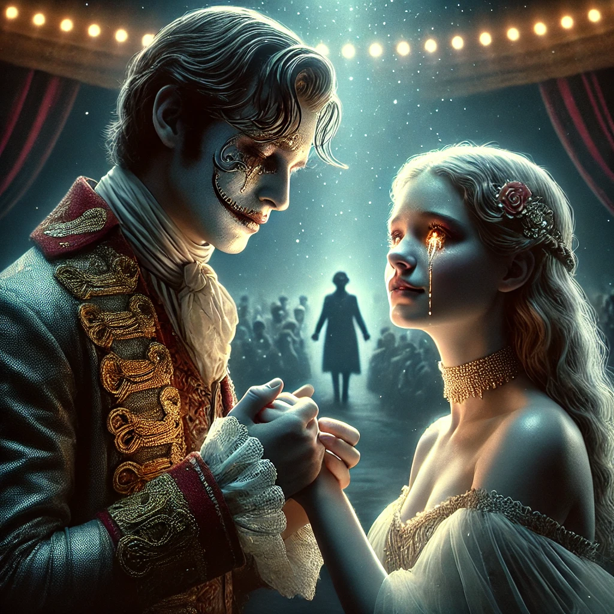

웃는 남자
목차
작가
빅토르 위고
출판연도
1869년
감상평에 대한 AI그림
신체적 장애를 가지고 있는 사람을 볼거리 수단으로 사용했던 시대상을 담고 있어 설정이 굉장히 잔혹하게 느껴졌다.
그렇지만 장애를 가진 연인의 순수하고 애틋한 사랑도 묘사하여 내용에 대한 거부감이 적었다.

감상평에 대한 AI평가
✨ 주제 의식이 명확함 – 시대적 잔혹성과 장애를 이용한 착취라는 중요한 주제를 잘 짚었어요.
✨ 균형 잡힌 시각 – 단순히 부정적인 시각에서 머무르지 않고, 작품이 가진 따뜻한 요소(연인의 순수한 사랑)도 함께 언급했어요.
✨ 간결하고 직관적임 – 불필요한 설명 없이 작품의 핵심적인 인상을 짧은 문장에 담았어요.
✨ 문장 연결 다듬기 – 두 문장이 각각 따로 떨어진 느낌이 있어요.